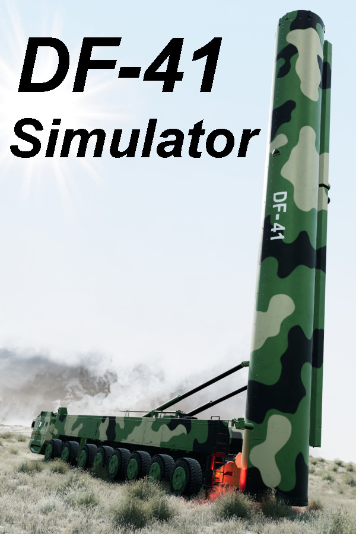

DF-41 Simulator
DF-41 Simulator
Details
|  | |
| Playtime | Not Played |
| Last Activity | Never |
| Added | 13/08/2020 |
| Modified | Never |
| Completion Status | Not Played |
| Source | Steam |
| Platform | PC |
| Release Date | 07/07/2020 |
| Community Score | 55 |
| Critic Score | |
| User Score | |
| Genre | Action Free to Play Indie RPG Simulation |
| Developer | Bo Chen |
| Publisher | Bo Chen |
| Feature | Single Player |
| Links | PCGamingWiki Community Hub Discussions Guides Store Page News |
Description
This is a free 3D visualizer and simulator of the Dongfeng-41 (DF-41) road-mobile intercontinental ballistic missile. The DF-41 launcher itself is fully drive-able with mechanics to launch the nuclear warhead in-game.
这是东风41（DF-41）公路机动洲际弹道导弹的免费3D可视化工具和模拟器。 DF-41发射器本身可以由机械师完全驱动，以在游戏中发射核弹头。
=====
免费下载，整个游戏项目
Chinese download:
Full project file, assets, source code
https://pastebin.com/6tLaJQuw
=====
This is a small-map open-world sandbox setting where the user is located in undisclosed location in the deserts of China and is given the task to roam around in first-person walking mode and/or drive around in driving mode to any arbitrary location reachable by the mobile launcher on wheels and then given the latitude to launch and release the nuclear missile upon successful nuclear code authentication process.
=====
### Quick Start ###:
＃＃＃ 快速开始 ＃＃＃
1) Press "E" to ENTER/(also exits) vehicle to drive the DF-41 in WASD mode (must be standing very close to the front door of the cabin of the truck to activate Entering)
按“ E”进入DF-41，一旦进入DF-41，就可以使用WASD键驱动它。 （当您按下“ E”键时，必须非常靠近机舱的前门站立）
2) Press "R" to raise the missile tubes in preparation for launch (vehicle must already be at complete stop first, hit spacebar for brakes) and this only works when you are in drive mode instead of fps walking mode (see step #1 above)
按 “ R” 键将导弹管升起以准备发射（车辆必须首先已经完全停止，按下空格键才能刹车），并且仅在处于驾驶模式而不是（第一人称）行走模式时才有效（请参见步骤 以上＃1）
3) Press "U" on keyboard at any time in any mode to cycle between showing the different layers of the missile tip. (optional and just for visualization purposes)
4) Press "J" to jettison/eject the dome/cap (this only works when you are in drive mode instead of fps walking mode)
5) Press "T" to trigger the countdown timer and invoke the authentication process for nuclear missile launch (this only works when you are in drive mode instead of fps walking mode)
按 “ T” 触发倒数计时器并调用核导弹发射的身份验证过程（仅在处于驱动模式而不是fps步行模式时有效）
Search for free "DF-41 Authenticator" (put in quotes) app on Google Play to download the authentication app that generates the authentication/activation code from the challenge code presented in-game. (OPTIONAL)
在 Google Play 上搜索免费的 “DF-41 Authenticator” （引号） 应用程序，以下载身份验证应用程序，该应用程序可通过游戏中显示的质询代码生成身份验证/激活码。 （可选的）
*or use HUAWEI as the passcode... (see update above)
=====
ALT+F2 while in-game to start Nvidia Ansel to take high resolution screenshots from any angle or perspective...
在游戏中按 ALT + F2 键即可启动 Nvidia Ansel，以便从任何角度或角度拍摄高分辨率屏幕截图...
SHIFT enables RUN while walking, superspeed enabled to roam map
SPACEBAR jumps while in fps walk mode, superjumping enabled to see more vantage points
ALT+F4 to EXIT game, there is no game menu/UI for now, I will add in August updates.
=====
The game loads directly into first-person mode, enabling the gamer to walk around using WASD on the keyboard and mouse cursor to turn and to look up and down. You may explore the entire map. To enter the DF-41 mobile launcher vehicle you should walk to the front cabin on the left-hand driver-side and approach very closely to the front set of doors and then hit "E" key to Enter the vehicle. Once in vehicle the drive mode takes over and the WASD keys now control the driving mechanics and the mouse cursor can be used to pan the camera around the DF-41 truck. To exit the vehicle in drive mode simply press "E" again to exit back to first-person walking mode.
To raise the missile tubes in preparation for launch, the DF-41 must already be at a full stop (spacebar for brakes) and then press "R" to raise the missile tube. Once the missile tube is raised vertically at 90 degrees upright, you may then press the "T" key to start the countdown to launch. At any time during this entire process you may choose to press the "J" key to eject the missile tube dome. If you forget to eject the dome prior to missile launch it will automatically jettison and eject before final countdown begins.
Although not required to play the game, there will be optionally the ability for the user to emulate a pseudo authentication process prior to nuclear launch via means of using a free standalone DF-41 Authenticator app (Android and later iOS) in conjunction with the DF-41 Simulator. More details on this can be found in the user manual.
*** A more comprehensive PDF user manual will be followed up and released shortly ***
During gameplay you can press the "U" key to make hidden the missile tube dome to directly expose the nuclear missile inside the tube, and pressing U once more time will hide the missile cap and expose the individual MIRVs (of which there are up to 10 configured on the DF-41) inside the missile. Pressing U a third time will cycle it back to original configuration of displaying everything and un-hiding all.
这是东风41（DF-41）公路机动洲际弹道导弹的免费3D可视化工具和模拟器。 DF-41发射器本身可以由机械师完全驱动，以在游戏中发射核弹头。
=====
免费下载，整个游戏项目
Chinese download:
Full project file, assets, source code
https://pastebin.com/6tLaJQuw
=====
This is a small-map open-world sandbox setting where the user is located in undisclosed location in the deserts of China and is given the task to roam around in first-person walking mode and/or drive around in driving mode to any arbitrary location reachable by the mobile launcher on wheels and then given the latitude to launch and release the nuclear missile upon successful nuclear code authentication process.
=====
### Quick Start ###:
＃＃＃ 快速开始 ＃＃＃
1) Press "E" to ENTER/(also exits) vehicle to drive the DF-41 in WASD mode (must be standing very close to the front door of the cabin of the truck to activate Entering)
按“ E”进入DF-41，一旦进入DF-41，就可以使用WASD键驱动它。 （当您按下“ E”键时，必须非常靠近机舱的前门站立）
2) Press "R" to raise the missile tubes in preparation for launch (vehicle must already be at complete stop first, hit spacebar for brakes) and this only works when you are in drive mode instead of fps walking mode (see step #1 above)
按 “ R” 键将导弹管升起以准备发射（车辆必须首先已经完全停止，按下空格键才能刹车），并且仅在处于驾驶模式而不是（第一人称）行走模式时才有效（请参见步骤 以上＃1）
3) Press "U" on keyboard at any time in any mode to cycle between showing the different layers of the missile tip. (optional and just for visualization purposes)
4) Press "J" to jettison/eject the dome/cap (this only works when you are in drive mode instead of fps walking mode)
5) Press "T" to trigger the countdown timer and invoke the authentication process for nuclear missile launch (this only works when you are in drive mode instead of fps walking mode)
按 “ T” 触发倒数计时器并调用核导弹发射的身份验证过程（仅在处于驱动模式而不是fps步行模式时有效）
Search for free "DF-41 Authenticator" (put in quotes) app on Google Play to download the authentication app that generates the authentication/activation code from the challenge code presented in-game. (OPTIONAL)
在 Google Play 上搜索免费的 “DF-41 Authenticator” （引号） 应用程序，以下载身份验证应用程序，该应用程序可通过游戏中显示的质询代码生成身份验证/激活码。 （可选的）
*or use HUAWEI as the passcode... (see update above)
=====
ALT+F2 while in-game to start Nvidia Ansel to take high resolution screenshots from any angle or perspective...
在游戏中按 ALT + F2 键即可启动 Nvidia Ansel，以便从任何角度或角度拍摄高分辨率屏幕截图...
SHIFT enables RUN while walking, superspeed enabled to roam map
SPACEBAR jumps while in fps walk mode, superjumping enabled to see more vantage points
ALT+F4 to EXIT game, there is no game menu/UI for now, I will add in August updates.
=====
The game loads directly into first-person mode, enabling the gamer to walk around using WASD on the keyboard and mouse cursor to turn and to look up and down. You may explore the entire map. To enter the DF-41 mobile launcher vehicle you should walk to the front cabin on the left-hand driver-side and approach very closely to the front set of doors and then hit "E" key to Enter the vehicle. Once in vehicle the drive mode takes over and the WASD keys now control the driving mechanics and the mouse cursor can be used to pan the camera around the DF-41 truck. To exit the vehicle in drive mode simply press "E" again to exit back to first-person walking mode.
To raise the missile tubes in preparation for launch, the DF-41 must already be at a full stop (spacebar for brakes) and then press "R" to raise the missile tube. Once the missile tube is raised vertically at 90 degrees upright, you may then press the "T" key to start the countdown to launch. At any time during this entire process you may choose to press the "J" key to eject the missile tube dome. If you forget to eject the dome prior to missile launch it will automatically jettison and eject before final countdown begins.
Although not required to play the game, there will be optionally the ability for the user to emulate a pseudo authentication process prior to nuclear launch via means of using a free standalone DF-41 Authenticator app (Android and later iOS) in conjunction with the DF-41 Simulator. More details on this can be found in the user manual.
*** A more comprehensive PDF user manual will be followed up and released shortly ***
During gameplay you can press the "U" key to make hidden the missile tube dome to directly expose the nuclear missile inside the tube, and pressing U once more time will hide the missile cap and expose the individual MIRVs (of which there are up to 10 configured on the DF-41) inside the missile. Pressing U a third time will cycle it back to original configuration of displaying everything and un-hiding all.